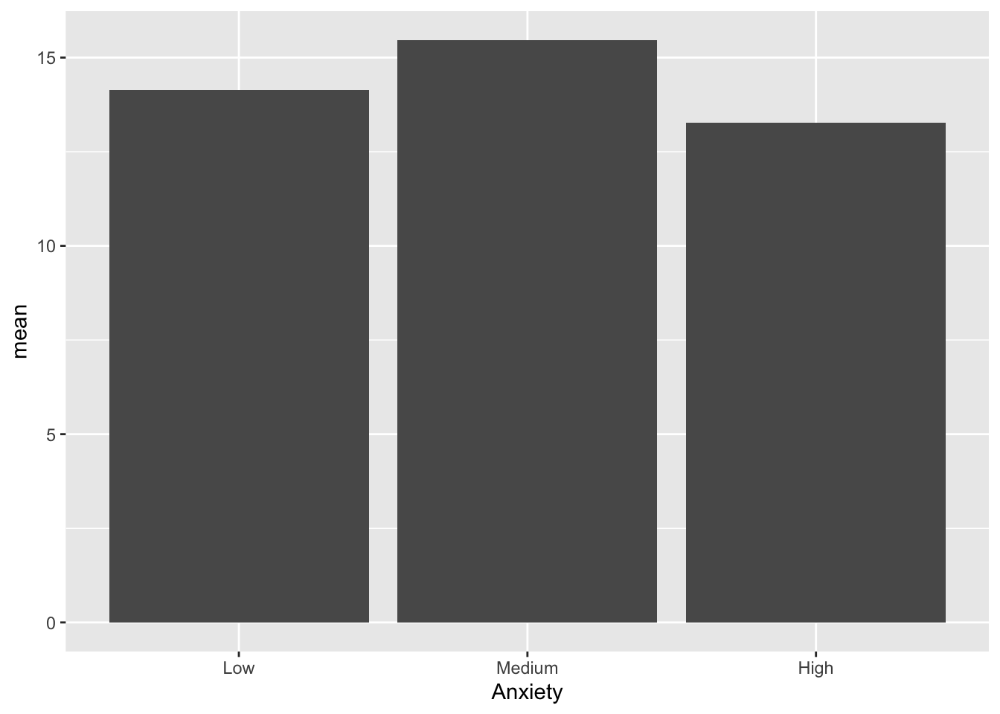

On the Moodle website download the pdf file Anxiety and Learning example
Step 1 - Identify variables
Variable 1 = Anxiety
Variable 2 = Learn new material
Variable 3 = Difficulty of new material
Step 2 - What kind of variables?
Anxiety = categorical -> ordinal
Difficulty of new material = categorical -> ordinal
Ability to learn new material = numeric -> ratio
Step 3 - How do I get it into R Studio?
The first example we’ll look at as a Tibble. A tibble is helpful
because you can set it up like a normal spreadsheet. Use a
~ to tell R which words are the names for your variables.
For each variable make sure you don’t have any spaces. All variables and
objects should not contain a space between words. Choose a single word
for your variables or use an _. Remember that each row
should be an observation and each column should be a variable. Here’s
how you would set it up (It’s incomplete, but you get the general
idea).
Learning_TR <- tribble(~Difficulty, ~Anxiety, ~Score,
"Low", "Low", 18,
"Low", "Low", 17,
"Low", "Low", 20,
"Low", "Low", 16,
"Low", "Low", 17,
"Low", "Medium", 18,
"Low", "Medium", 18,
"Low", "Medium", 19,
"Low", "Medium", 15,
"Low", "Medium", 17,
"Low", "High", 18,
"Low", "High", 17,
"Low", "High", 16,
"Low", "High", 18,
"Low", "High", 19,
"Medium", "Low", 18)Another way to create this kind of dataset is to use the repeat
function rep. But remember you need to slightly different
patterns to include each observation based on the different ordinal
variables.
Learning <- data.frame(
Difficulty =
c(rep(c("Low", "Medium", "High"), each = 15)),
Anxiety =
c(rep(c("Low", "Medium", "High"), times = 5)),
Score =
c(18, 18, 18, 17, 18, 17, 20, 19, 16,
16, 15, 18, 17, 17, 19, 18, 18, 14,
14, 17, 15, 17, 18, 17, 16, 15, 12,
14, 14, 16, 11, 15, 9, 6, 12, 8, 10,
13, 7, 10, 11, 8, 8, 12, 5))
Learning## Difficulty Anxiety Score
## 1 Low Low 18
## 2 Low Medium 18
## 3 Low High 18
## 4 Low Low 17
## 5 Low Medium 18
## 6 Low High 17
## 7 Low Low 20
## 8 Low Medium 19
## 9 Low High 16
## 10 Low Low 16
## 11 Low Medium 15
## 12 Low High 18
## 13 Low Low 17
## 14 Low Medium 17
## 15 Low High 19
## 16 Medium Low 18
## 17 Medium Medium 18
## 18 Medium High 14
## 19 Medium Low 14
## 20 Medium Medium 17
## 21 Medium High 15
## 22 Medium Low 17
## 23 Medium Medium 18
## 24 Medium High 17
## 25 Medium Low 16
## 26 Medium Medium 15
## 27 Medium High 12
## 28 Medium Low 14
## 29 Medium Medium 14
## 30 Medium High 16
## 31 High Low 11
## 32 High Medium 15
## 33 High High 9
## 34 High Low 6
## 35 High Medium 12
## 36 High High 8
## 37 High Low 10
## 38 High Medium 13
## 39 High High 7
## 40 High Low 10
## 41 High Medium 11
## 42 High High 8
## 43 High Low 8
## 44 High Medium 12
## 45 High High 5Let’s check out our variables using the str command
str(Learning)## 'data.frame': 45 obs. of 3 variables:
## $ Difficulty: chr "Low" "Low" "Low" "Low" ...
## $ Anxiety : chr "Low" "Medium" "High" "Low" ...
## $ Score : num 18 18 18 17 18 17 20 19 16 16 ...Notice our two ordinal variables are listed as chr,
which stands for character and our ratio variable is listed as
num which stands for numeric or number.
The only thing missing is making our two ordinal variables factors. A factor allows us to show a character variable based on a specific order, so they can actually be ordinal and not just words or strings. There are two ways to do this.
First define the levels of your factor variable.
Levels <- c("Low", "Medium", "High")Then change the variable itself using the object Levels
to define the order of your factor variable.
Learning$Difficulty <- factor(Learning$Difficulty,
levels = Levels)You can also define the levels in the code to create a factor in one step like this example using the Anxiety variable.
Learning$Anxiety <- factor(Learning$Anxiety,
levels = c("Low", "Medium", "High"))Now check out the structure with the adjustments you’ve just made to
your dataset. It should now identify Anxiety and
Difficulty as factors.
str(Learning)## 'data.frame': 45 obs. of 3 variables:
## $ Difficulty: Factor w/ 3 levels "Low","Medium",..: 1 1 1 1 1 1 1 1 1 1 ...
## $ Anxiety : Factor w/ 3 levels "Low","Medium",..: 1 2 3 1 2 3 1 2 3 1 ...
## $ Score : num 18 18 18 17 18 17 20 19 16 16 ...To create a bar graph we need to do a little more work since this will be based on one of our measures of central tendency, the mean, because count or number won’t tell us much about the variables.
So we need to use the pipe again %>% and something
new, the summarize function summarise. Summarise allows us
to calculate various measurements of central tendency, variation, and
others. Then we can use those numbers in a graph.
Learning_Mean <- Learning %>%
group_by(Anxiety) %>%
summarise(n = n(),
mean = mean(Score))
Learning_Mean## # A tibble: 3 × 3
## Anxiety n mean
## <fct> <int> <dbl>
## 1 Low 15 14.1
## 2 Medium 15 15.5
## 3 High 15 13.3Next Let’s create the bar graph using the Anxiety variable and mean score from the new dataset.
ggplot(data = Learning_Mean) +
geom_bar(mapping = aes(x = Anxiety,
y = mean), stat = "identity" )